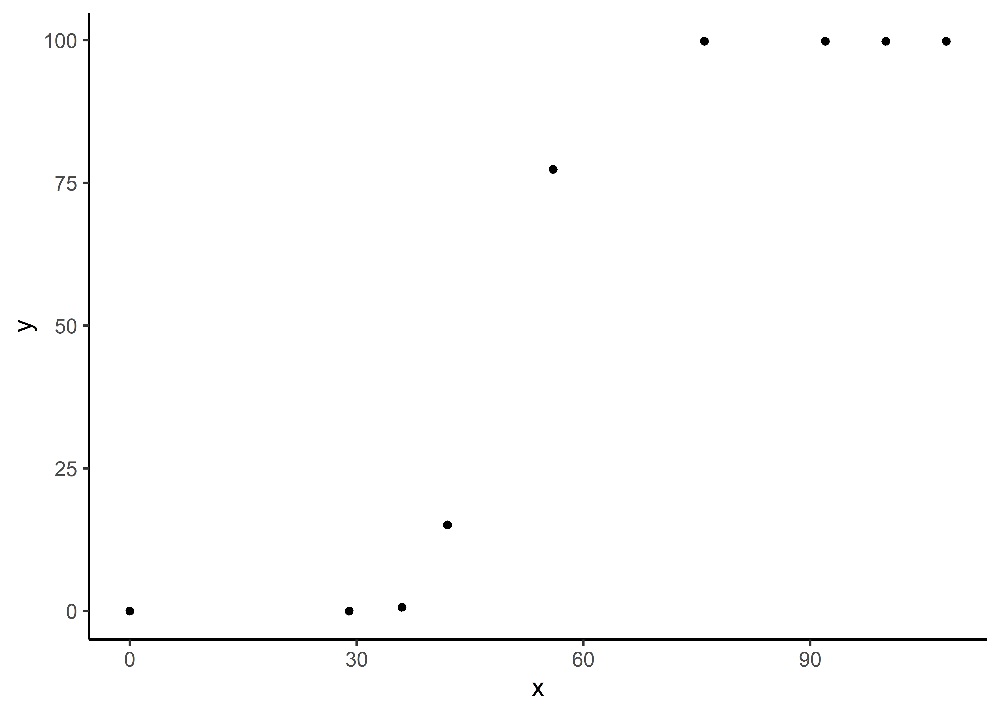

exploreHTP is designed to assist researchers and plant breeders in efficiently exploring and analyzing data derived from drone imagery. This package offers a suite of tools tailored to the unique needs of plant breeding data, facilitating comprehensive data exploration, correlation analysis, and data manipulation.
Key functionalities include:
- Data Exploration: Simplified methods for visualizing and manipulating large datasets from high throughput phenotyping.
- Correlation Analysis: Tools to calculate correlations between different traits and across multiple time points, providing insights into trait relationships and temporal dynamics.
- Modeling Canopy Evolution: Advanced functionalities for modeling and predicting canopy growth and development over time.
- Modeling Plant Height: Functionalities for modeling and predicting Plant Height and development over time.
- Modeling Maturity: Functionalities for modeling and predicting Maturity and development over time.
Installation
You can install the development version of exploreHTP from GitHub with:
# install.packages("devtools")
devtools::install_github("AparicioJohan/exploreHTP")1. Reading Data
This is a basic example which shows how to use exploreHTP:
library(exploreHTP)
data(dt_chips)
results <- read_HTP(
data = dt_chips,
genotype = "Gen",
time = "DAP",
plot = "Plot",
traits = c("Canopy", "PH"),
row = "Row",
range = "Range"
)
names(results)
#> [1] "summ_traits" "exp_design_resum" "locals_min_max" "dt_long"
plot(results, type = "evolution")
head(results$summ_traits)| trait | time | Min | Mean | Median | Max | SD | CV | n | miss | miss% | neg% |
|---|---|---|---|---|---|---|---|---|---|---|---|
| Canopy | 28 | 0.00 | 0.01 | 0.00 | 0.52 | 0.06 | 4.46 | 196 | 0 | 0 | 0 |
| Canopy | 42 | 1.33 | 19.31 | 19.72 | 41.65 | 8.14 | 0.42 | 196 | 0 | 0 | 0 |
| Canopy | 50 | 18.53 | 52.75 | 53.36 | 82.39 | 11.76 | 0.22 | 196 | 0 | 0 | 0 |
| Canopy | 62 | 52.37 | 85.06 | 86.31 | 99.86 | 9.63 | 0.11 | 196 | 0 | 0 | 0 |
| Canopy | 77 | 94.83 | 99.83 | 99.94 | 100.00 | 0.51 | 0.01 | 196 | 0 | 0 | 0 |
| Canopy | 84 | 95.40 | 99.88 | 100.00 | 100.02 | 0.51 | 0.01 | 196 | 0 | 0 | 0 |
| n | n_gen | n_row | n_range | num_of_reps | num_of_gen |
|---|---|---|---|---|---|
| 196 | 178 | 14 | 14 | 1_2_3 | 163_12_3 |
2. Plotting correlations (1)
# Trait by Time
table <- plot(results, label_size = 4, signif = TRUE, n_row = 1)
head(table)| time | col | row | corr | p.value | n | signi |
|---|---|---|---|---|---|---|
| 42 | Canopy | PH | 0.77 | 0.0000000 | 196 | *** |
| 50 | Canopy | PH | 0.89 | 0.0000000 | 196 | *** |
| 62 | Canopy | PH | 0.50 | 0.0000000 | 196 | *** |
| 77 | Canopy | PH | 0.28 | 0.0000557 | 196 | *** |
| 84 | Canopy | PH | 0.23 | 0.0009829 | 196 | *** |
| 96 | Canopy | PH | 0.43 | 0.0000000 | 196 | *** |
| 105 | Canopy | PH | 0.52 | 0.0000000 | 196 | *** |
3. Plotting correlations (2)
# Time by Trait
table <- plot(results, type = "time_by_trait", label_size = 4, signif = TRUE)
head(table)| trait | col | row | corr | p.value | n | signi |
|---|---|---|---|---|---|---|
| Canopy | 28 | 105 | -0.06 | 1.0000000 | 196 | ns |
| Canopy | 28 | 42 | 0.21 | 0.0646376 | 196 | ns |
| Canopy | 28 | 50 | 0.17 | 0.2985603 | 196 | ns |
| Canopy | 28 | 62 | 0.04 | 1.0000000 | 196 | ns |
| Canopy | 28 | 77 | 0.06 | 1.0000000 | 196 | ns |
| Canopy | 28 | 84 | 0.04 | 1.0000000 | 196 | ns |
4. Estimating days to emergence and days to full canopy
out <- canopy_HTP(
results = results,
canopy = "Canopy",
plot_id = c(60, 150),
correct_max = TRUE,
add_zero = TRUE,
fn_sse = sse_piwise
)
names(out)
#> [1] "param" "dt" "fn" "max_time"
| plot | genotype | row | range | t1 | t2 | k | sse | total_area |
|---|---|---|---|---|---|---|---|---|
| 60 | W19026-15 | 4 | 5 | 38.045 | 68.662 | 99.956 | 4.894 | 5162.344 |
| 150 | W19023-21 | 10 | 11 | 33.791 | 68.496 | 100.000 | 40.406 | 5385.674 |
5. Modelling Plant Height
ph_1 <- height_HTP(
results = results,
canopy = out,
plant_height = "PH",
add_zero = TRUE,
method = c("nlminb", "anms", "mla", "pracmanm", "subplex"),
return_method = TRUE,
parameters = c(t2 = 67, alpha = 1 / 600, beta = -1 / 80),
fn_sse = sse_exp2_exp,
fn = quote(fn_exp2_exp(time, t1, t2, alpha, beta))
)
| plot | genotype | row | range | t2 | alpha | beta | t1 | method | sse | total_area |
|---|---|---|---|---|---|---|---|---|---|---|
| 60 | W19026-15 | 4 | 5 | 62 | 0.001 | -0.035 | 38.045 | subplex | 0.009 | 27.976 |
| 150 | W19023-21 | 10 | 11 | 62 | 0.001 | -0.018 | 33.791 | subplex | 0.001 | 32.890 |
6. Modelling Maturity
data(dt_potato)
results <- read_HTP(
data = dt_potato,
genotype = "Gen",
time = "DAP",
plot = "Plot",
traits = c("Canopy", "GLI_2"),
row = "Row",
range = "Range"
)
out <- canopy_HTP(results, canopy = "Canopy", plot_id = c(195, 40))
mat <- maturity_HTP(
results = results,
canopy = out,
index = "GLI_2",
parameters = c(t1 = 38.7, t2 = 62, t3 = 90, k = 0.32, beta = -0.01),
fn_sse = sse_lin_pl_lin,
fn = quote(fn_lin_pl_lin(time, t1, t2, t3, k, beta))
)
plot(mat, plot_id = c(195, 40))
| plot | genotype | row | range | t1 | t2 | t3 | k | beta | sse | total_area |
|---|---|---|---|---|---|---|---|---|---|---|
| 40 | W17043-37 | 12 | 3 | 36.880 | 66.416 | 79.854 | 0.369 | -0.011 | 0.001 | 16.615 |
| 195 | W16219-8 | 13 | 14 | 39.591 | 68.279 | 93.336 | 0.323 | -0.010 | 0.000 | 16.376 |